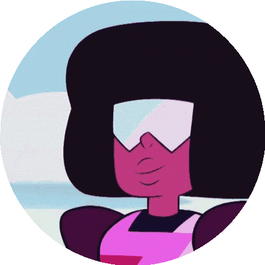

First Situation
A few know, but Garnet is a fusion. Two gems in love, Ruby and Sapphire merged out of unconditional love, and live a life in a form that represents their feelings. Despite two different gems not being able to merge according to the rules of the Homeworld dictatorship, Garnet found on Earth a place where she had the freedom to act freely. However, due to an internal discussion between the two of them, they separate and assume their original form. At this moment, Rose's stone acts in Garnet's room, materializing a mirage of the much-feared dictator Yellow Diamond, who begins to judge the feelings established there, saying that it was absolutely forbidden. At this moment:
